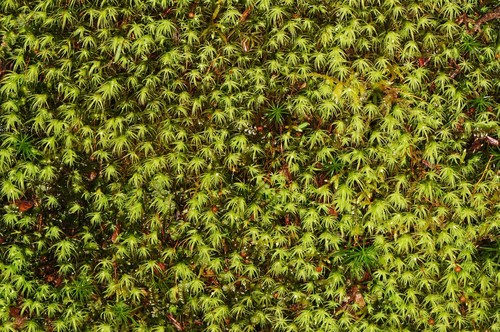

Bartramiaceae
Apple Moss Family
Bartramiaceae is a moderately large and diverse family of acrocarpous mosses, commonly known as the Apple Moss family. This name refers to the characteristically globose to subglobose (apple-shaped) capsules found in many species, particularly the type genus Bartramia. These mosses typically form dense tufts or cushions, often with a distinctive bluish-green (glaucous) or yellowish-green hue, and are found in a wide range of habitats worldwide.
Overview
The Bartramiaceae family includes around 10 genera and approximately 375 species, making it a significant component of bryophyte flora globally. They inhabit diverse environments, ranging from damp soil banks and rock crevices (both acidic and calcareous) to cliffs, seepage areas, stream banks, and alpine tundra. While some genera like Philonotis prefer consistently wet habitats, others like Bartramia can be found on relatively drier rock faces.
Members typically grow as dense tufts or cushions, which can vary in size from small and compact to large and robust (e.g., Breutelia). The leaves are often linear-lanceolate and appear somewhat stiff, contributing to the characteristic texture of the tufts. The most unifying feature across the family is the tendency towards producing spherical or nearly spherical capsules, often ribbed when dry, borne on setae of varying lengths.
Ecologically, Bartramiaceae species can be important colonizers of disturbed soil and rock. Some species, particularly Philonotis, are indicators of moist or wet conditions, sometimes associated with springs or seepage. Phylogenetically, the family is usually placed in its own order, Bartramiales, within the class Bryopsida.
Quick Facts
- Scientific Name: Bartramiaceae
- Common Name: Apple Moss Family
- Number of Genera: Approximately 10
- Number of Species: Approximately 375
- Distribution: Cosmopolitan, in diverse habitats from arctic/alpine to tropical.
- Evolutionary Group: Bryophytes - Mosses (Class: Bryopsida, Order: Bartramiales)
Key Characteristics
Growth Form and Habit
Bartramiaceae are acrocarpous mosses, forming dense tufts or cushions. Plant size varies considerably among genera, from small (e.g., Philonotis) to large and robust (e.g., Breutelia). Color is often yellowish-green or characteristically bluish-green (glaucous).
Stems
Stems are erect, usually branched, and often densely covered below with reddish-brown or sometimes whitish rhizoids (tomentum).
Leaves
Leaves are typically narrow, linear-lanceolate to subulate (awl-shaped), often arising from a broader, sometimes sheathing base. They usually appear somewhat stiff and straight, though in Philonotis they are often falcate-secund (curved to one side). The costa (midrib) is single and strong, usually percurrent (reaching the tip) or excurrent (extending beyond). Leaf margins are typically sharply toothed, especially in the upper part. Leaf cells are variable but often rectangular to linear, and frequently papillose; papillae may be over the cell lumen or at the cell ends (prorate).
Asexual Reproduction
While specialized gemmae like those in Aulacomniaceae are generally absent, some species may produce axillary propagules (small deciduous branchlets or modified leaves) or reproduce via fragmentation.
Sporophytes (Reproductive Structures)
Sporophytes are terminal on main stems or branches. The capsule is elevated on a seta, which can be short or long depending on the genus/species. The capsule is the most characteristic feature: typically globose to subglobose (spherical or nearly so, resembling a tiny apple), often inclined or cernuous (nodding), and frequently asymmetric. The capsule surface is often distinctly striate or ribbed when dry. The peristome is usually double (diplolepidous), though it can be single or even absent in some species. The operculum (lid) is typically small and conic.
Habitat
The family occupies a wide range of habitats, generally preferring moist conditions but varying among genera. Common habitats include damp soil banks, crevices and ledges of acidic or calcareous rocks, cliffs, stream banks, seepage areas, springs, wet meadows, and alpine/arctic tundra.
Field Identification
Identifying Bartramiaceae often involves recognizing the dense tufted habit, the often stiff, narrow leaves, and especially the distinctive shape of the capsules when present.
Primary Identification Features
- Growth Habit: Dense tufts or cushions, often yellowish-green or bluish-green (glaucous).
- Capsule Shape (Key Feature): Look for globose to subglobose ("apple-shaped") capsules, borne on setae. Capsules are often inclined and frequently ribbed/striate when dry.
- Leaves: Typically linear-lanceolate to subulate, appearing somewhat stiff. In Philonotis, often falcate-secund.
- Habitat: Diverse, but often associated with damp soil banks, rock crevices, or wet areas.
Secondary Identification Features
- Leaf Cells (Microscopic): Often papillose (sometimes prorate), typically rectangular to linear.
- Rhizoids: Stems often densely tomentose below.
- Leaf Margins: Usually toothed towards the apex.
Seasonal Identification Tips
- Year-round: The gametophytes forming tufts are visible year-round.
- Sporophyte Timing: Capsules typically mature in spring and summer in temperate regions, but timing varies. The characteristic shape is evident even when immature, and the ribbing becomes clear as they dry.
Common Confusion Points
Bartramiaceae can be confused with other tufted acrocarpous mosses:
- Aulacomniaceae: Also has ribbed capsules on setae, but capsules are cylindrical, not globose, and some species have distinctive stalked gemmae.
- Grimmiaceae: Often on rock, but capsules are typically ovate or cylindric (not globose) and peristome structure differs.
- Bryaceae: Some form tufts, but capsules are usually pyriform (pear-shaped) or pendulous, and leaves/cells differ.
- Mniaceae: Typically have broader leaves with distinct borders.
- Philonotis vs. other wet-habitat mosses: Can resemble Pohlia or Dicranella; distinguished by papillose/prorate cells, secund leaves (often), and globose capsules.
The "apple-shaped" (globose/subglobose) capsule is the most reliable field mark for the family.
Field Guide Quick Reference
Look For:
- Dense tufts/cushions (often yellowish/bluish-green)
- Linear-lanceolate/subulate leaves
- Capsule on seta
- Capsule globose/subglobose ("apple-shaped")
- Capsule often inclined, ribbed/striate when dry
- Habitat: Soil banks, rock crevices, wet areas
Key Variations:
- Plant size (small to robust)
- Presence/absence of glaucous hue
- Leaf orientation (straight vs. secund)
- Seta length (short to long)
Notable Examples
The family includes several well-known genera:

Bartramia pomiformis
Common Apple-moss
Widespread in the Northern Hemisphere, often on shaded, acidic rock ledges or soil banks. Forms dense, often glaucous green tufts with stiff, linear leaves. Famous for its perfectly spherical, green (when young) capsules resembling tiny apples, becoming ribbed and brown when dry.

Philonotis fontana
Fountain Apple-moss / Fountain Moss
Common in wet habitats like springs, fens, stream banks, and seepage areas. Forms yellowish-green tufts or mats. Leaves are typically falcate-secund (curved to one side), lanceolate, and cells are often prorate. Capsules are subglobose and ribbed.

Plagiopus oederianus
Oeder's Apple-moss
Often found in calcareous habitats, such as damp limestone crevices or base-rich soil banks. Forms dense, green tufts. Distinguished by leaves with a distinctly broad, pale, sheathing base abruptly narrowed to a linear limb. Capsules are subglobose and ribbed.

Breutelia chrysocoma
Golden Head-moss
A large, robust moss forming conspicuous golden-yellow to brownish tufts, often in moorlands or wet mountain slopes. Stems are densely covered in reddish tomentum. Leaves are plicate (folded) at the base and long-acuminate. Capsules are rare but subglobose.
Phylogeny and Classification
Bartramiaceae is placed within the class Bryopsida and is usually recognized as constituting its own order, Bartramiales. This order is considered somewhat isolated within the subclass Bryidae, not having clear close relationships to large orders like Bryales, Hypnales, or Orthotrichales based on morphology, although molecular studies are continually refining its position.
The family exhibits considerable morphological diversity, especially in gametophyte size and structure (compare Philonotis and Breutelia), but is unified by the characteristic globose capsule type and features of the peristome (when present). The order Bartramiales is sometimes considered monotypic (containing only Bartramiaceae) or may occasionally include the small family Catoscopiaceae.
Position in Plant Phylogeny
- Kingdom: Plantae
- Division: Bryophyta (Mosses)
- Class: Bryopsida
- Subclass: Bryidae
- Order: Bartramiales
- Family: Bartramiaceae
Evolutionary Significance
Bartramiaceae showcases several points of evolutionary interest:
- Distinct Capsule Morphology: The prevalence of the globose ("apple-shaped") capsule represents a significant morphological specialization within acrocarpous mosses.
- Habitat Diversity: The family has successfully radiated into a wide array of habitats, from wet fens to drier rock faces.
- Papillae Development: Variations in leaf cell papillae (central vs. prorate) provide characters for studying micro-morphological evolution.
- Isolated Phylogenetic Position: Its placement in its own order suggests a relatively early divergence within the Bryidae subclass, making it important for understanding the broader relationships among major moss groups.